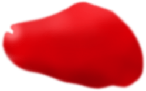
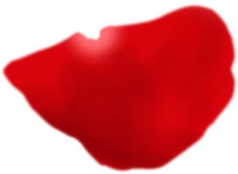
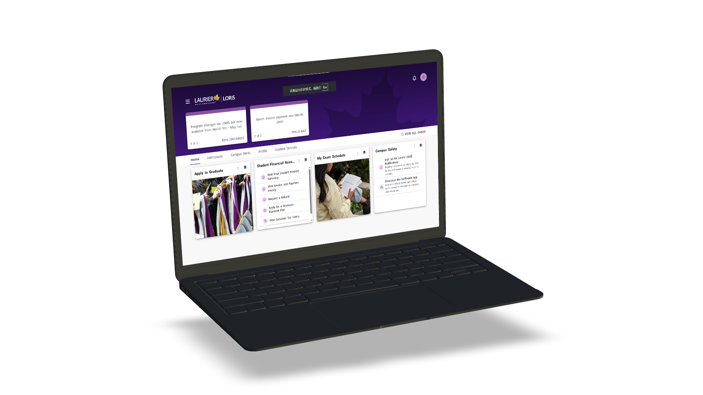
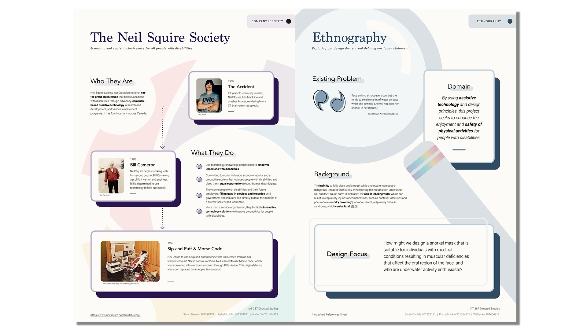

LORIS (Laurier Online Registration and Information System) is the administration tool used by Wilfrid Laurier University for online registration and information management. LORIS has been upgraded in the end of 2025. However, this upgrade lacked extensive user testing, resulting in usability issues during the 2026 school year. By using multiple research studies, I conducted a thorough investigation and assessment of the interaction paths of the core administrative processes of LORIS
Instructor: Susie Simon
Walter Xu ( UX Researcher )
Duration: 3 Months, Jan 2026 - Apr 2026
Adopt a Mixed-method approach (combining quantitative indicators with qualitative interviews).
The PURE study invited 3 UX experts to quantify the inherent cognitive friction in the design of the LORIS portal website
The motivation for this product came from an inquiry on the Neil Squire Society Community Board - a Canadian national non-profit organization that helps those with disabilities through advocacy. We came across an individual who wanted to find some way to "keep her snorkel in her mouth" as she 'tends to swallow a lot of water on days when she is weak" (anonymous client).
Following the preliminary research stage, we determined our initial driving question/design focus to be:
How might we design a snorkel mask that is suitable for individuals with medical conditions resulting in deficiencies that affect the oral region of the face, and who are underwater activity enthusiasts?

Research Poster of Neil Squire Society
I practiced what I learned about user experience design in this project, also learned a lot of new knowledge about UX design from Rishabh and Sarah, including SWOT analysis. At the same time I became more proficient in the digital models and the preparation of 3D printing.In particular, how to optimize the zero, thin and overhang faces in the model to meet the standards of 3D printing. Overall, I gained a lot of experience from this project. For the first time, I finished a complete project with a small team of talented people.